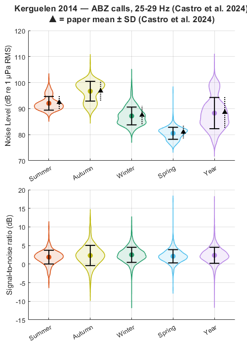

SNR of Antarctic blue whale calls — Kerguelen 2014 (Castro et al. 2024)
Reproduces the seasonal SNR and noise level distributions shown in Figure 5 of Castro et al. (2024). ABW A, B, and Z calls are pooled across 12 months at Kerguelen Island, with SNR and noise level estimated using calibrated spectrogramSlices (25-29 Hz, simple power ratio). Noise levels match the paper within 0.5 dB after bandwidth correction.
REFERENCE Castro, F.R. et al. (2024). Beyond Counting Calls: Estimating Detection Probability for Antarctic Blue Whales. Frontiers in Marine Science. https://doi.org/10.3389/fmars.2024.1406678
DATA Annotations and recordings: Australian Antarctic Data Centre https://data.aad.gov.au/metadata/AcousticTrends_BlueFinLibrary https://doi.org/10.26179/5e6056035c01b Calibration: loadRecorderMetaData('Kerguelen2014') [longTermRecorders] Contact aadcwebqueries@aad.gov.au for access.
Contents
User configuration
Edit the paths below to match your local installation. Annotations are part of the IWC-SORP Annotated Library public download (doi:10.26179/5e6056035c01b). Recordings are available from the same DOI. Calibration metadata requires loadRecorderMetaData() from the longTermRecorders toolbox (contact aadcwebqueries@aad.gov.au).
annotationRoot = 's:\work\annotatedLibrary\SORP\kerguelen2014\'; soundFolder = 's:\work\annotatedLibrary\SORP\kerguelen2014\wav\'; siteCode = 'Kerguelen2014'; % STFT parameters from BmZspectroParams.m nfft = 1024; nOverlap = floor(nfft * 0.85); % 870 samples % SNR parameters matching callDensityParams.m signalFrequencyBand = [25 29]; % Hz — unit-A band noiseDurationStrategy = 'beforeAndAfter'; noiseDelaySeconds = 1.0; % Call types — pooled as ABZ following Castro et al. (2024) callTypePattern = '*.Bm.Ant-*selections.txt'; pooledCallLabel = 'ABZ'; % Output verbosity showBsnrProgress = false;
Suppress expected warnings
warning('off', 'snrEstimate:nfftAutoSelected'); warning('off', 'snrEstimate:nfftTruncation'); warning('off', 'snrEstimate:nfftHighTruncation'); warning('off', 'MATLAB:table:ModifiedAndSavedVarnames');
Published values from Castro et al. (2024) Table/Figure 5
Noise level mean and std by season (dB re 1 µPa, mean PSD in [25-29] Hz band)
paperNL.seasonOrder = {'summer', 'autumn', 'winter', 'spring', 'year'};
paperNL.mean = [92.4, 96.8, 87.5, 81.0, 88.6];
paperNL.std = [ 2.6, 3.7, 3.5, 2.4, 5.9];
Load calibration metadata
fprintf('Loading calibration metadata for %s...\n', siteCode); recorderMetadata = loadRecorderMetaData(siteCode); fprintf(' Sensitivity: %.1f dB re V/µPa\n', recorderMetadata.hydroSensitivity_dB); fprintf(' ADC peak: %.1f V\n', recorderMetadata.adPeakVolt);
Loading calibration metadata for Kerguelen2014... Sensitivity: -165.5 dB re V/µPa ADC peak: 1.5 V
Load annotations
fprintf('\nLoading Raven selection tables...\n'); ravenFileList = dir(fullfile(annotationRoot, callTypePattern)); if isempty(ravenFileList) error('No Raven selection tables found in %s', annotationRoot); end allDetections = table(); for f = 1:numel(ravenFileList) ravenFilePath = fullfile(ravenFileList(f).folder, ravenFileList(f).name); % Infer classification from filename if contains(ravenFileList(f).name, 'Ant-A') callType = 'BmAntA'; elseif contains(ravenFileList(f).name, 'Ant-B') callType = 'BmAntB'; elseif contains(ravenFileList(f).name, 'Ant-Z') callType = 'BmAntZ'; else callType = 'BmAnt'; end detections = ravenTableToDetection(ravenFilePath, soundFolder, siteCode, callType); if ~isempty(detections) && height(detections) > 0 fprintf(' %s: n=%d\n', callType, height(detections)); allDetections = [allDetections; detections]; %#ok<AGROW> end end fprintf(' Total: n=%d\n', height(allDetections));
Loading Raven selection tables... BmAntA: n=2557 BmAntB: n=1177 BmAntZ: n=563 Total: n=4297
Compute SNR
fprintf('\nComputing SNR (spectrogramSlices, calibrated)...\n'); snrParams = struct( ... 'snrType', 'spectrogramSlices', ... 'nfft', nfft, ... 'nOverlap', nOverlap, ... 'noiseDuration', noiseDurationStrategy, ... 'noiseDelay', noiseDelaySeconds, ... 'freq', signalFrequencyBand, ... 'useLurton', false, ... 'metadata', recorderMetadata, ... 'showClips', false, ... 'verbose', showBsnrProgress); snrResults = snrEstimate(allDetections, snrParams); allDetections.snr = snrResults.snr; allDetections.signalLevel = snrResults.signalRMSdB; allDetections.noiseLevel = snrResults.noiseRMSdB; % Convert band-integrated power to mean PSD level in band. % bsnr returns bandpower() which integrates PSD over [25-29] Hz (4 Hz bandwidth). % The paper reports mean PSD level: bandpower / bandwidth in dB. % 10*log10(bandwidth) = 10*log10(4) = 6.02 dB correction. bandwidthCorrection_dB = 10 * log10(diff(signalFrequencyBand)); allDetections.noiseLevel = allDetections.noiseLevel - bandwidthCorrection_dB; allDetections.signalLevel = allDetections.signalLevel - bandwidthCorrection_dB;
Computing SNR (spectrogramSlices, calibrated)...
Assign seasons (Southern Hemisphere)
summer: Dec-Feb, autumn: Mar-May, winter: Jun-Aug, spring: Sep-Nov
detectionDatetime = datetime(allDetections.t0, 'ConvertFrom', 'datenum'); allDetections.season = dt2season(detectionDatetime);
Summary statistics by season
seasonOrder = {'summer', 'autumn', 'winter', 'spring', 'year'};
seasonLabels = {'Summer', 'Autumn', 'Winter', 'Spring', 'Year'};
fprintf('\n%-8s %5s %6s %6s %6s %6s %6s %6s\n', ...
'Season', 'n', 'SNR_mn', 'SNR_med', 'NL_mn', 'NL_med', 'NL_paper', 'NL_diff');
fprintf('%s\n', repmat('-', 1, 66));
for s = 1:numel(seasonOrder)
if strcmp(seasonOrder{s}, 'year')
mask = isfinite(allDetections.snr);
else
mask = allDetections.season == seasonOrder{s} & isfinite(allDetections.snr);
end
snrSeason = allDetections.snr(mask);
nlSeason = allDetections.noiseLevel(mask);
paperNLmean = paperNL.mean(strcmp(paperNL.seasonOrder, seasonOrder{s}));
nlDiff = mean(nlSeason) - paperNLmean;
fprintf('%-8s %5d %6.1f %6.1f %6.1f %6.1f %6.1f %+6.2f\n', ...
seasonOrder{s}, sum(mask), ...
mean(snrSeason), median(snrSeason), ...
mean(nlSeason), median(nlSeason), paperNLmean, nlDiff);
end
Season n SNR_mn SNR_med NL_mn NL_med NL_paper NL_diff ------------------------------------------------------------------ summer 221 1.9 2.0 92.0 91.4 92.4 -0.36 autumn 858 2.3 2.3 96.7 97.6 96.8 -0.11 winter 2543 2.5 2.4 87.2 86.8 87.5 -0.33 spring 675 2.1 2.0 80.5 80.8 81.0 -0.48 year 4297 2.4 2.3 88.3 87.5 88.6 -0.32
Figure: seasonal SNR and NL distributions (replicates Figure 5)
seasonColours = [0.85 0.33 0.10; % summer — red 0.75 0.73 0.05; % autumn — olive 0.17 0.63 0.44; % winter — teal 0.30 0.75 0.93; % spring — sky blue 0.72 0.53 0.90]; % year — lavender fig1 = figure('Name', 'Castro 2024 Figure 5 — SNR and NL by season', ... 'Units', 'pixels', 'Position', [50 50 500 700]); tlo1 = tiledlayout(fig1, 2, 1, 'TileSpacing', 'compact', 'Padding', 'compact'); title(tlo1, sprintf('Kerguelen 2014 — ABZ calls, %d-%d Hz (Castro et al. 2024)\n▲ = paper mean ± SD (Castro et al. 2024)', ... signalFrequencyBand(1), signalFrequencyBand(2)), 'FontWeight', 'bold'); for panel = 1:2 nexttile(tlo1); hold on; for s = 1:numel(seasonOrder) if strcmp(seasonOrder{s}, 'year') mask = isfinite(allDetections.snr); else mask = allDetections.season == seasonOrder{s} & isfinite(allDetections.snr); end if panel == 1 vals = allDetections.noiseLevel(mask); else vals = allDetections.snr(mask); end vals = vals(isfinite(vals)); if numel(vals) < 5, continue; end % Violin using ksdensity [ksDensity, ksGrid] = ksdensity(vals, 'NumPoints', 200); ksDensity = ksDensity / max(ksDensity) * 0.35; % normalise width xPos = s; fill([xPos + ksDensity, xPos - fliplr(ksDensity)], ... [ksGrid, fliplr(ksGrid)], ... seasonColours(s,:), 'FaceAlpha', 0.15, ... 'EdgeColor', seasonColours(s,:), 'LineWidth', 1.2, ... 'HandleVisibility', 'off'); % Mean and std error bars valMean = mean(vals); valStd = std(vals); plot(xPos, valMean, 'o', 'MarkerSize', 7, ... 'MarkerFaceColor', seasonColours(s,:), ... 'MarkerEdgeColor', seasonColours(s,:), ... 'HandleVisibility', 'off'); plot([xPos xPos], valMean + [-1 1]*valStd, 'k-', 'LineWidth', 1.5, ... 'HandleVisibility', 'off'); plot(xPos + [-0.12 0.12], [valMean-valStd valMean-valStd], 'k-', 'LineWidth', 1.5, ... 'HandleVisibility', 'off'); plot(xPos + [-0.12 0.12], [valMean+valStd valMean+valStd], 'k-', 'LineWidth', 1.5, ... 'HandleVisibility', 'off'); end % Overlay paper NL mean ± std for NL panel if panel == 1 for s = 1:numel(seasonOrder) pMean = paperNL.mean(strcmp(paperNL.seasonOrder, seasonOrder{s})); pStd = paperNL.std(strcmp(paperNL.seasonOrder, seasonOrder{s})); plot(s + 0.25, pMean, 'k^', 'MarkerSize', 6, 'MarkerFaceColor', 'k', ... 'HandleVisibility', 'off'); plot([s+0.25 s+0.25], pMean + [-1 1]*pStd, 'k:', 'LineWidth', 1.5, ... 'HandleVisibility', 'off'); end end hold off; set(gca, 'XTick', 1:numel(seasonOrder), 'XTickLabel', seasonLabels, ... 'XTickLabelRotation', 30); if panel == 1 ylabel('Noise Level (dB re 1 µPa RMS)'); else ylabel('Signal-to-noise ratio (dB)'); xline(0, 'k--', 'LineWidth', 0.5, 'HandleVisibility', 'off'); end grid on; xlim([0.5 numel(seasonOrder)+0.5]); end

Save results
outputFile = fullfile(fileparts(mfilename('fullpath')), ... 'snr_abw_kerguelen2014_castro2024_results.csv'); writetable(allDetections(:, {'t0', 'duration', 'fLow', 'fHigh', ... 'classification', 'season', 'snr', 'signalLevel', 'noiseLevel'}), ... outputFile); fprintf('\nResults saved to: %s\n', outputFile);
Results saved to: C:\analysis\bsnr\examples\snr_abw_kerguelen2014_castro2024_results.csv